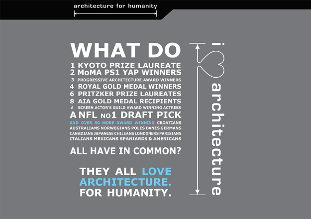
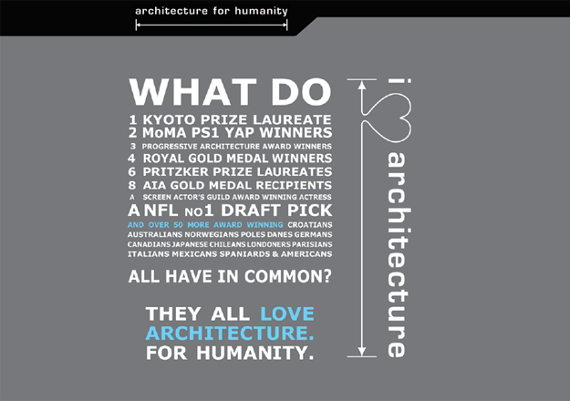

welcome to
the portfolio of
Kristen Schlott!
selected work from 2010 to present
Part I. Early Design Exploration
urban + regional spaces
(2010 - 2012)
My final semester as an undergraduate, I took a graduate-level architecture class as part of a cross-disciplinary initiative from the engineering school. It was my first experience with formal design theory, and ultimately set me squarely on the path towards becoming a designer, initially focused on sustainability-minded urban design.
---
1. Biomimicry + Sustainable Design
WASHINGTON UNIVERSITY IN ST. LOUIS, STUDENT (WINTER 2010)
contributors: Kristen Schlott, Kevin Murray, Chelsea Knuf, Whitney King
My team and I were charged to make an in-depth inquiry into the life and times of Lumbricus terrestris - the common earthworm.
In short, the worm has hydrostatic skeleton, a large internal body cavity filled with fluid. In addition, it has a system of radial sphincter muscles which, when applied the volume of water they contain, affords its unique affinity for corporeal expansion or contraction, thus enabling it to burrow.
Inspired by this insight, we set about several months of experimentation and prototyping, which resulted in a final proposed application for this principle - a retractable rainwater catchment facade.
See above for select prototypes (concepts and fabrication by team), and the final proposal (as rendered by Kevin Murray).
Our facade is made of a matrix of individual modules - waterproof flexible pockets.
The pockets are suspended from a rigid frame that is anchored at the top of a building’s face, but capable of expands linearly downward as the system fills with water.
At rest, the pockets, and thus the whole system, are devoid of water and at volumetric “zero”. During a rain event, water is funneled from the roof of the building into the top of the system. As water enters the top of the system, gravity accelerates it downwards to the bottom boundary of the system, whence the pockets fill to the volumetric maximum.
The corresponding weight of water triggers the system to expand linearly down the face of the building. Rows of pockets are subsequently filled from the bottom up, until both linear and volumetric expansion are complete, and the system is at capacity.
The system remains at capacity until water is taken out, for use by the building’s residents or directed back to the municipal storm water system at a time when burden on the system is lower.
Shortly after graduating with a BA in Environmental Studies + Environmental Engineering, I moved to San Francisco to attend an intensive urban planning + design summer program at UC Berkeley.
---
2. Urban Planning + Design Program
UC BERKELEY, STUDENT (SUMMER 2011)
contributors: Kristen Schlott, Mark Dreger, Niko Mizono, Rachel Rhodes
We were prompted to propose any "feasible green solution" for an urban issue in downtown Berkeley, giving consideration to the guidelines set out in Berkeley's Climate Action Plan and SB 375.
In order to achieve the 2020 zero waste goal outlined in the Climate Action Plan, we felt it vital to address the inefficiencies of composting and recycling within commercial businesses and multi-family residential units, especially given the rapid rate of population growth the area was experiencing.

We proposed a solution that would address waste disposal in multi-unit residential buildings and commercial businesses. In short, a system of advanced shoots would separate compost and recycling from garbage, and runnel it into below-ground temporary storage. Garbage collection trucks would be retrofitted to access these storage areas from the street level.
In addition, the system would include a smart bins + smart bill feature. Each building's refuse would be weighed, and rebates would be offered for customers with greater waste diversion.
My role within the team was to specialize in data visualization, particularly working with GIS mapping software, as well as the detail design of our final presentation.
In the fall of 2011, I interned with the San Francisco Planning Department. I took the opportunity to deepen my mapping skills, so I worked particularly with the Mapping Data Library and the GIS technical team at the department.
---
3. Urban Planning + Design Program
SF PLANNING DEPARTMENT, INTERN (FALL 2011)
solo project with technical support from SF Planning
My task for the fall was to figure out how to collect and analyze new data about several of San Francisco's Neighborhood Commercial Districts, and particularly whether they complied with the San Francisco General Plan that the proliferation of eating & drinking establishments shouldn't occupy more than 20% of commercial frontages.
Over the course of several months, I had to create a procedure to measure land use concentrations. Ultimately, I hiked around many neighborhoods with a rolatape measuring wheel and a clipboard.
Back at the department, I created a database of my findings to organize metadata like block lot numbers, frontage measurements, land use codes, etc.
Working with the technical pros at the department, we developed a tool to import and reformat my datasets, such that they would be compatible to use with ArcGIS.
I was then able to generate various maps to visualize commercial frontage use, these were used to report out and inform whatever future policy action was to be taken.
Through my work at the Planning Department, I stumbled upon two goldmines of mapping data 1) the publicly accessible data.sfgov.org and 2) the internal collection of shapefiles used to render Planning Department maps and reports. They presented an endlessly fascinating way to learn about my new home of San Francisco.
---
4. Mapping Adventures in the Bay
PERSONAL PROJECT(WINTER 2011)
solo project
Too many hours were spent browsing datasets, discovering strange and wonderful new things. But they didn't have everything I was interested in, what of live outside the city itself? I wanted more. With my new @sfgov.org email address, I was able to reach out to data custodians at other area planning departments and was able to procure a plethora of additional shapefiles for my personal collection.
I set out set out to create my own map, of significant scale, which I could use to explore and discover things about the entire 9-county bay area.


The map morphed from simply a beautiful visualization of my data library, into an adventure tool. I did research on anecdotally new and exciting things to do in the region, and imbedded a geo-coded list of the best of the best into the map.
The map was designed with the human scale in mind, and with an attempt to capture features relevant to normal modes of human transportation; walking, biking, driving, public transit, and political boundaries are all notated. It was modeled in GIS, finished in Adobe Illustrator and finally printed on 48'' canvas.
Some day I would love to create an interactive digital version, perhaps as a tool to share ideas and adventure plans with friends, or just to keep track of your own "to do" list.

Part II. Professional Development
Transition to Digital Platforms
(2012 - 2013)
In early 2012, I went to volunteer (and eventually become employed) at Architecture for Humanity, an incredible nonprofit that provides design services for communities in need.
Their programs range from small-scale design interventions to city-scale sustainability planning. Given both the wide range of work they do and the incredible impact they have on communities worldwide, I was hoping to discover more about the particular influence me and my skills could one day have.
---
5. Graphic Design, Various Projects
ARCHITECTURE FOR HUMANITY, DESIGN FELLOW (2012 - 2013)
solo projects
Initially, I did whatever was needed to support the organization, which ended up being a lot of graphic design.
- 1) As part of their ongoing partnership with Dwell Media, Architecture for Humanity receives in-kind donations of the magazine's full page remnant ads. The July / August 2013 issue includes photo used with permission by Paul Gallo, with overlaid original graphics, copy and arrangement by me. Statistics are from the recent State of Our Schools report released by the USGBC Center for Green Schools, an Architecture for Humanity partner.
- 2) I also designed this ad, which was feature in the February 2013 issue.
- 3) I designed co-branded assets for lots of the organization's partnership, including this one for Absolut Vodka. For each of its major programs, Architecture for Humanity builds incredible architectural models that are all hand-made in-house with balsa wood. I photographed one such model from the Biloxi Model Homes Program, for a special photoshop treatment.
published in print in:

My second Valentines Day with Architecture for Humanity, we decided to do something special for our donors.
---
6. Architecture Valentines
ARCHITECTURE FOR HUMANITY, DESIGN FELLOW (2012 - 2013)
solo project
I conceived and designed a set of Architecture Valentines, to send out for donors to download.

They ended up being a great hit! They were featured in several design blogs online, and were downloaded a bunch of times.
I designed all the cards featured below, and my colleague Karl Johnson later went back and produced cards featuring several more buildings for the series, inline with the original concept.(you'll see our designs featured together online)
---
published online at:


Over the course of 2 years, my duties in-house at Architecture for Humanity ranged from graphic design for one-off marketing pieces, to program development, to donor database management.
Eventually, I became the organizer of the annual giving campaigns. Enter: the world of digital design.
---
7. Advocacy Campaigns
ARCHITECTURE FOR HUMANITY, DEVELOPMENT ASSOCIATE (2013)
project executor with various contributors
Given the financial constraints of working with a non-profit, I designed a series of campaigns that would engage directly with donors almost exclusively on digital platforms. There were two parts to each of these campaigns - an outreach period, and a "final ask."
Outreach included a parallel social media campaign and a targeted major-donor outreach strategy.
The "final ask", could be any sort of appeal.
 

To implement the targeted major-donor outreach strategy, on the back end I created a series of detailed donor reports using information from our CRM database. I used addresses to map donors and identify our top supporting cities, based on donor density. I then overlaid maps of where our major chapters were located, and found key target markets.
- 1) The "big ask" was for donors to engage in an online auction we hosted. This photo was taken by Kris Jong at the auction item view / bid party I organized.
- 2) I worked on both the first and second annual I Love Architecture campaigns, and designed the original logo that has been used since 2012.
- 3) I reached out to 50+ renowned designers including Daniel Libeskind, David Adjaye, Fumihiko Maki, Jeanne Gang, Renzo Piano, Steven Holl and many many more, They donated original works, which we auctioned off on ebay to raise money. I layed out this promo piece, with thumbnails of top sketches.
- 4) The public announcement I designed for the auction collection.
- 5) Postcard I designed to announce the auction collection - back.
- 6) Postcard I designed to announce the auction collection - back.
For the annual "What Do You See?" campaign, I worked on a microsite and a video, link above. I co-managed the production process, and the video was produced by Ravel Creative and Hamilton Gordon with illustrations by Johanne Vestergaard, Karl Johnson, Michael Steiner and myself.
Web development was by Albatross Digital with all content and additional UI design by myself.
I worked particularly closely on UI for the microsite. We needed something that could also serve to be used for future fundraisers and campaigns.
While I did absorb a lot about the inner-workings of project-management and design in the built-space, I learned even more about design in the digital world, and became increasingly interested in digital media as the media for me. Thus I began freelancing with several local small businesses, providing mostly UI/UX design services.
---
8. SolarNexus Sales App
SOLARNEXUS, FREELANCE (FALL 2013)
solo project
One project I particularly enjoyed as a freelancer, was working with Solar Nexus, a Bay Area solar integrator (and B Corporation) dedicated to developing software solutions for companies that exist at any point within the solar deployment value chain. They make implementing solar easier.
They hired me to design a mobile app for tablets that would serve as an effective interface with their CRM software, to enable sales professionals in the field analyze the potential for energy retrofits in homes.
The app includes a version of their existing sales software, as well as a new tool for quickly identifying roof plane feasibility for solar panel installation, and a new client-facing interactive presentation tool.
As of fall 2013, the app was being prototyped. See still mockups below for a step by step of the user experience.
Part III. Work I Want to Keep Doing
database interfacing
large-scale information architecture & interaction models
(2013 - 2014)
Putting in several months as a designer for hire part-time, I tried out roles on projects with several very different companies. I became more and more interested in defining myself definitively as a UI/UX designer and information architecture. I left Architecture for Humanity to freelance full time, and set out in pursuit projects that were just as fulfilling from a skill set-perspective as an impact perspective.
---
9. Sunk Investment UI
SUNK INVESTMENT, FREELANCE (ONGOING)
contributors: Kristen Schlott, Daniel Goldarb, Michael Vauttone
I recently joined some friends of mine on a project, tentatively called "Sunk Investment." Conceptually, we're making a tool to help people understand the threat that climate change poses to their homes and businesses. People will come to the site, enter their address, and the search results will return a projected "risk" for their area, whether that be coastal or inland near rivers ("risk" metrics are a combination of the intensity and rate of water level rise).
We will then provide them with the tools to "take action," to share their data or message their local government representatives.


The Sunk Investment map projections are based on the latest aggregate data for projected water level rises in the US, obtained through the USGS. Right now half the team is building a database from this data to support the back end, while I am leading the design front to deliver the full UI, as well as detail design.
A working prototype is nearly ready to enter a first round of usability testing, while we wait to hear back about a grant from the Climate CoLab at the MIT Center for Collective Intelligence!
In my final months as a freelancer, I was given an incredible opportunity to work with The Internet Archive, an organization I love dearly for the work they do. A Creative Director and I worked with the TVNews Team at Archive.org, to design v2.0 of their recently launched TV News site - the interface for a repository of 500k and growing broadcasts from news networks worldwide. That site is currently being tested for launch in the next month!
---
10. TVNews
THE INTERNET ARCHIVE, FREELANCE (WINTER 2013)
contributors: Kristen Schlott, David Merkoski, Ben Ronning
Upon receiving a grant from the Knight Foundation earlier this year, the good folks at the Internet Archive hired master designer David Merkoski to overhaul their TV News + Broadcast site. David, in turn, built a team of including himself, Ben Ronning for prototype development, and myself for UI/UX design.
In keeping with the Archive's ethos of pure and open data, we designed a highly functional site with very simple design detail, that provide users with the cleanest access to the Archive's vast library of TV News broadcasts. The site is currently live in beta mode and being tested for a launch scheduled this month ( February 2014)!


Challenge #1 was to develop a search tool that did not rely on a potentially biased, user generated "tagging" system. For this we called upon researchers at Stanford to help analyze broadcast transcripts for content-based segments (e.g. state of the union, sports), that would logically relate to potential search terms.
Challenge #2 was conception and development of a new method for sharing unaltered content from the TV News archive. Thus, the Quote tool was born. Quote allows users to very simply select and share shorter (30 seconds or less) video clips, or "Quotes," from within a longer broadcast. Over time, any subsequent view / share activity is logged on the Quote's unique page much like a tumblr, spotlighting trends within various TV News topics.
▼
▼
▼
▼
▼
▼
▼
▼
▼
▼
▼
▼
▼
▼
▼
▼
▼
▼
▼
▼
▼
▼
▼
▼
▼
▼
▼
▼
▼
▼
▼
▼
▼
▼
▼
▼
Part ▼. Personal Projects


▼
▼
▼
▼

photo by Ayesha Ghosh
- site and all content, unless otherwise noted, designed + developed by Kristen Schlott
- 545 Broderick Street # 12
- San Francisco, CA, 94117
- c: 712.310.6699
- e: kristenschlott@gmail.com